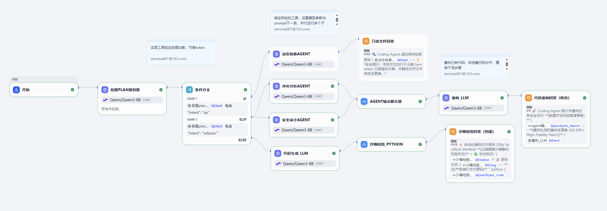

01
分层记忆 与 任务级断点续跑
两层渐进式上下文压缩（近期原文保留 + 结构化摘要，含净收益校验）；打通"LLM 提取 → 记忆块解析 → 按类型路由 → 索引写入"持久化链路，修复自动记忆"只收集不落盘"缺陷。实现任务级 Checkpoint，每轮工具执行后落盘完整对话，中断后恢复上下文继续推进。
Checkpoint
断点续跑
断点续跑
01 // about
一个 Python 实现的多 Agent 编码助手，对标 Claude Code / Cursor 的编码工作流。基于流式工具调用、分层记忆、多 Agent 协作与精细权限控制构建，支持终端 TUI 与 Web 远程控制两种界面。
核心源码可复现，量化评测可复现——不空谈能力，用 benchmarks 实测说话。
LLM 输出边生成边执行，并发安全的调用合并为并行批次，减少往返时延。
近期原文 + 结构化摘要，跨会话持久化，压缩边界精确恢复。
coordinator 编排 + Worktree 文件级隔离，大型重构效率提升约 60%。
危险命令拦截、路径沙箱、规则引擎，权限弹窗从 30 次降至 5 次。
02 // highlights
两层渐进式上下文压缩（近期原文保留 + 结构化摘要，含净收益校验）；打通"LLM 提取 → 记忆块解析 → 按类型路由 → 索引写入"持久化链路，修复自动记忆"只收集不落盘"缺陷。实现任务级 Checkpoint，每轮工具执行后落盘完整对话，中断后恢复上下文继续推进。
基于 16 个真实编码任务（7 领域，easy/medium/hard）的评测流水线，任务拆分为可校验验证器（文件产出 / 内容匹配 / 命令退出码），驱动 Agent 隔离执行并打分。失败案例自动进回归集，并沉淀为结构化经验——重测通过才转正注入、否则丢弃（防污染）；相似任务按领域相似度检索注入历史教训，避免重复犯错。
coordinator 模式编排多子 Agent（规划 → 并行研究 → 综合 → 实现 → 独立验证），各子 Agent 运行在独立 Git Worktree 实现文件级隔离；直接解析 .git 免起子进程快速恢复（100ms → 1ms），symlink 共享大依赖，三重守卫自动清理陈旧工作树。
五层权限确认（危险命令拦截 / 路径沙箱 / 规则引擎 / 会话级放行 / 模式兜底），权限确认弹窗从平均 30 次降至 5 次以内；支持内核级隔离沙箱兜底。
底层内置 6 个核心工具（ReadFile / WriteFile / EditFile / Bash / Glob / Grep）负责文件与命令操作，配合五层权限；通用层经 MCP 接入市面 server，按需接入不造轮子。MCP 延迟加载按需加载工具描述，工具描述 Token 占用减少 74%，避免 schema 注入上下文。
03 // architecture
04 // benchmark
一套 16 个真实编码任务（7 领域 · easy/medium/hard）的回归评测流水线。任务被拆分为可校验验证器，驱动 Agent 在隔离目录执行并打分；失败案例自动进入回归集，下一轮自动重测。
05 // prototype
